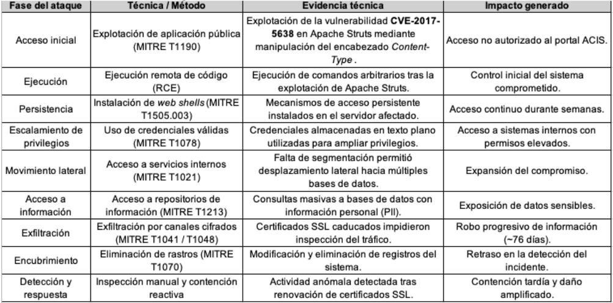
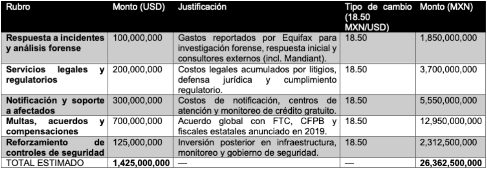

ACTIVIDAD #1
1. Introducción
El ciberataque sufrido por Equifax en 2017 constituye uno de los incidentes de seguridad de la información más relevantes de la última década debido a su magnitud, impacto económico y consecuencias regulatorias. La brecha expuso datos personales altamente sensibles de aproximadamente 147.9 millones de personas, evidenciando fallas estructurales en la gestión de vulnerabilidades, el monitoreo de seguridad y el gobierno corporativo de la información.
El análisis de este caso resulta especialmente pertinente, ya que el ataque no fue producto de técnicas avanzadas o vulnerabilidades de día cero, sino de la omisión en la aplicación de un parche de seguridad crítico previamente disponible. Este hecho evidencia que, en contextos donde los recursos técnicos y financieros son limitados, como ocurre en muchas organizaciones latinoamericanas, la falta de disciplina operativa, supervisión y liderazgo en ciberseguridad puede generar impactos desproporcionados.
En este sentido, el caso Equifax ofrece una referencia directa sobre la necesidad de priorizar controles preventivos básicos, gestión de vulnerabilidades y una cultura organizacional orientada a la protección de la información como activo estratégico.
2. Contexto general del ataque
El incidente ocurrió en 2017 en Estados Unidos y afectó a Equifax, una de las principales agencias de informes crediticios a nivel mundial. El ataque tuvo como origen la explotación de una vulnerabilidad crítica en el framework Apache Struts, utilizada en una aplicación web expuesta al público.
Previo al ataque, Equifax contaba con políticas de seguridad documentadas, pero carecía de una implementación efectiva. La infraestructura presentaba una arquitectura de red poco segmentada, un inventario de activos incompleto y deficiencias en los procesos de gestión de parches. Estas condiciones facilitaron que una vulnerabilidad conocida permaneciera sin corregirse y fuera explotada durante un periodo prolongado sin detección.
3. Análisis técnico del caso
3.1 Vector de ataque y vulnerabilidad explotada
El vector de ataque inicial fue la explotación de la vulnerabilidad CVE-2017-5638 en el framework Apache Struts 2, utilizada en el portal web de disputas de consumidores de Equifax (ACIS). Esta vulnerabilidad, clasificada con una severidad CVSS 10.0 (crítica), permitía la ejecución remota de código (RCE) sin autenticación mediante la manipulación del encabezado HTTP Content-Type durante el procesamiento de solicitudes multipart.
Aunque el parche de seguridad fue publicado en marzo de 2017 por la Apache Software Foundation y comunicado internamente dentro de la organización, el sistema vulnerable no fue actualizado ni verificado. Esta omisión permitió a los atacantes explotar una vulnerabilidad conocida y documentada, evidenciando una falla crítica en la gestión de parches y validación de correcciones.
La explotación exitosa otorgó a los atacantes acceso no autorizado al servidor web comprometido, desde el cual pudieron ejecutar comandos arbitrarios y establecer control inicial del sistema afectado.
3.2 Desarrollo del ataque
El ataque siguió un patrón clásico de intrusión avanzada, alineado con las fases del marco MITRE ATT&CK, como se describe a continuación:
- Acceso inicial: Explotación de una aplicación pública vulnerable (MITRE T1190) mediante CVE-2017-5638.
- Ejecución: Ejecución remota de comandos en el servidor comprometido, permitiendo la instalación de herramientas adicionales.
- Persistencia: Implementación de mecanismos como web shells (MITRE T1505.003) para mantener acceso continuo.
- Escalamiento de privilegios y movimiento lateral: Uso de credenciales almacenadas en texto plano y una arquitectura de red sin segmentación efectiva, facilitando el acceso a múltiples bases de datos internas (MITRE T1078, T1021).
- Acceso y exfiltración de información: Realización de consultas masivas a bases de datos con información personal sensible (PII) y exfiltración progresiva de datos a través de canales cifrados (MITRE T1041 / T1048).
- Encubrimiento: Intentos de borrar o modificar registros del sistema para retrasar la detección del incidente (MITRE T1070).
La exfiltración de datos se mantuvo activa durante aproximadamente 76 días. La caducidad de certificados utilizados para el monitoreo de tráfico cifrado impidió la inspección adecuada de las comunicaciones, lo que permitió que la actividad maliciosa pasara desapercibida durante un periodo prolongado.
4. Análisis técnico del caso
5. Evaluación del impacto (Modelo CIA)
Confidencialidad
La confidencialidad fue el principio más afectado. El acceso no autorizado permitió la exfiltración de información personal altamente sensible de aproximadamente 147.9 millones de personas, incluyendo números de Seguro Social, fechas de nacimiento, direcciones y datos financieros.
Este impacto fue consecuencia directa de la explotación de una vulnerabilidad crítica sin parchear, una arquitectura sin segmentación y mecanismos de detección ineficientes, lo que permitió la exposición prolongada de datos durante 76 días. A nivel empresarial, la pérdida de confidencialidad derivó en sanciones regulatorias, litigios masivos y un daño reputacional significativo.
Integridad
Aunque no se confirmó la modificación masiva de registros, el riesgo a la integridad fue elevado. Los atacantes obtuvieron acceso a sistemas internos mediante credenciales válidas almacenadas sin protección, lo que les permitió consultar información sensible sin restricciones adecuadas.
La ausencia de controles de acceso y la violación del principio de mínimo privilegio comprometieron la confiabilidad de los datos y evidenciaron una debilidad estructural en la protección de la información crítica.
Disponibilidad
La disponibilidad se vio afectada de forma indirecta tras la detección del incidente, cuando Equifax deshabilitó servicios críticos como el portal de disputas de consumidores. Posteriormente, los sistemas de atención colapsaron debido al alto volumen de consultas de usuarios afectados.
Este impacto demuestra que la disponibilidad depende no solo de la protección contra ataques directos, sino también de la capacidad organizacional para responder eficazmente a incidentes de gran escala.
Conclusión del análisis CIA
El análisis CIA confirma que, aunque el ataque se enfocó principalmente en la confidencialidad, las deficiencias en controles básicos amplificaron el impacto sobre la integridad y la disponibilidad, evidenciando la necesidad de una protección integral de la información.
6. Cálculo del Costo Total del Ciberataque (MXN)
7. Relación con Marcos Normativos
El caso Equifax evidencia incumplimientos críticos en la aplicación de controles establecidos por marcos normativos internacionales. Desde la perspectiva de ISO/IEC 27001, el control A.8 (Gestión de activos) no fue aplicado de forma efectiva, ya que la organización carecía de un inventario completo de sistemas que utilizaban Apache Struts y de una clasificación adecuada de la información sensible. Esta deficiencia impidió identificar y priorizar la protección de activos críticos expuestos a Internet.
Asimismo, el control A.12.6 (Gestión de vulnerabilidades técnicas) fue incumplido al no aplicarse ni verificarse oportunamente el parche correspondiente a la vulnerabilidad CVE- 2017-5638, pese a estar disponible y documentado. La correcta ejecución de este control habría prevenido el vector de ataque inicial y bloqueado el acceso no autorizado. De igual forma, el control A.9 (Control de accesos) no fue aplicado bajo el principio de mínimo privilegio, permitiendo a los atacantes utilizar credenciales internas para acceder a múltiples bases de datos sensibles, lo que amplificó el impacto del incidente.
En cuanto al monitoreo, el incumplimiento del control A.12.4 (Registro y monitoreo de eventos), evidenciado por certificados caducados y falta de supervisión, impidió detectar la exfiltración de datos durante semanas. Finalmente, la ausencia de procedimientos claros alineados al control A.16 (Gestión de incidentes) provocó una detección y respuesta tardías, incrementando el impacto operativo, regulatorio y reputacional.
Desde el enfoque del NIST Cybersecurity Framework, el incidente refleja fallas en todas sus funciones principales. En Identify, Equifax no identificó correctamente el riesgo crítico asociado al sistema vulnerable; en Protect, falló la aplicación de parches y controles de acceso básicos; en Detect, la falta de monitoreo permitió que el ataque permaneciera activo aproximadamente 76 días; en Respond, la reacción fue tardía y desorganizada; y en Recover, la recuperación resultó prolongada y costosa, evidenciando una preparación insuficiente.
Respecto al GDPR, el caso demuestra incumplimientos a los principios de seguridad del tratamiento establecidos en los artículos 5 y 32, al no implementarse medidas técnicas y organizativas proporcionales al nivel de sensibilidad de los datos personales tratados.
8. Conclusiones y Lecciones Aprendidas
El caso Equifax evidencia que los incidentes de ciberseguridad de alto impacto rara vez se originan por una única falla técnica, sino por una combinación de debilidades organizacionales, operativas y de gobierno corporativo. La explotación de una vulnerabilidad conocida, que contaba con corrección disponible, reflejó deficiencias críticas en la gestión de parches, la supervisión técnica y la priorización del riesgo.
Asimismo, la ausencia de una gobernanza sólida en seguridad de la información permitió que la intrusión permaneciera activa durante un periodo prolongado sin detección. La limitada coordinación entre áreas técnicas, legales y directivas demostró que la ciberseguridad no estaba integrada como un elemento estratégico en la toma de decisiones, lo que amplificó el impacto financiero, regulatorio y reputacional del incidente.
En el contexto latinoamericano, donde muchas organizaciones gestionan grandes volúmenes de datos sensibles en entornos de creciente digitalización y recursos limitados, este caso deja lecciones claras y aplicables. Resulta fundamental priorizar controles preventivos básicos como la gestión verificable de vulnerabilidades, la segmentación de redes y el monitoreo continuo, antes de invertir en soluciones complejas o reactivas. Asimismo, es indispensable fortalecer el liderazgo ejecutivo en materia de ciberseguridad, integrando la gestión de riesgos tecnológicos al gobierno corporativo y a la estrategia del negocio.
Ignorar estas prácticas no solo incrementa la probabilidad de incidentes similares, sino que compromete la continuidad operativa, la confianza de clientes y reguladores, y la sostenibilidad institucional a largo plazo. El caso Equifax demuestra que, para las organizaciones latinoamericanas, la prevención, la disciplina operativa y el liderazgo en seguridad representan una ventaja competitiva y no un costo adicional.